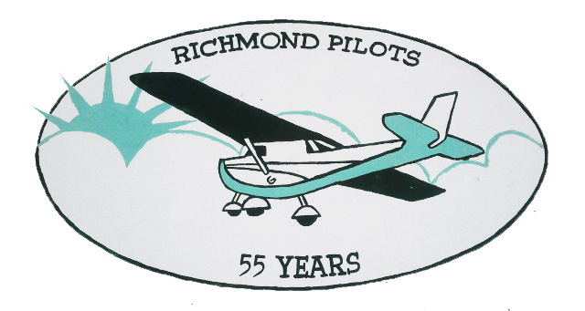
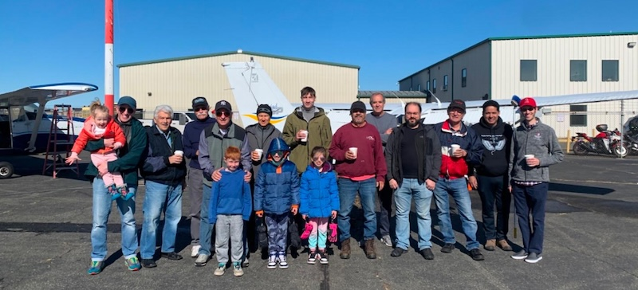
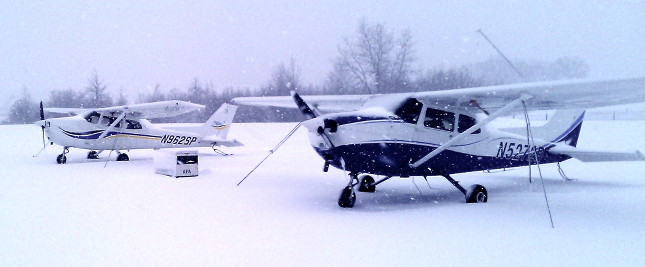
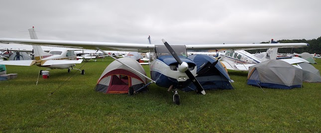
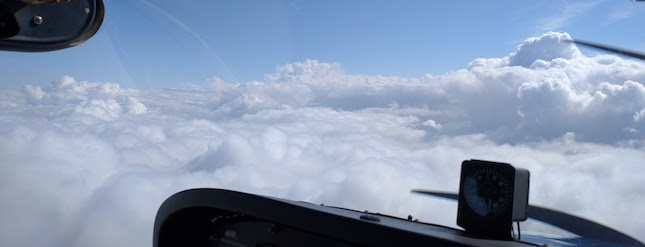

Richmond Pilots is a 501(c)(7) non-profit, equity-based flying club at Linden Airport (KLDJ) in Linden, New Jersey, serving pilots from New York City, Staten Island and North Jersey. The club owns two instrument-capable (IFR) Cessna 172s that members fly for $150–$165 per hour wet. The club is run entirely by its members and does not provide any commercial services. Membership is a great alternative to paying FBO prices, which are typically twice as much as club rates for the same aircraft.
Richmond Pilots has been in continuous operation since its formation in 1966 at Miller Field in Richmond County (Staten Island). When Miller Field closed, the club moved its planes to multiple airports including Linden, Colts Neck, and Central Jersey before consolidating in its current location at Linden Airport in NJ.

Who: Pilots (active and retired), Members, Prospective Members and Guests
When: 2nd Tuesday of the month at 7:30 pm
Where: Panini Grill in Staten Island, NY. Please contact the Chief Pilot for details.
Hourly rates for the aircraft are as follows (effective May 1, 2026):

The deposit is refundable if you decide to leave the club after a minimum of 3 years. If you decide to leave the club earlier, you will receive a pro-rated amount of the deposit.
Richmond Pilots owns two instrument-capable (IFR) Cessna 172s, both based at Linden Airport (KLDJ) and available to members for $150–$165 per hour, tach time, fuel included.
| Aircraft | Year | Engine | Equipped | Rate (tach, wet) |
|---|---|---|---|---|
| Cessna 172M Skyhawk, N5272R | 1974 | Lycoming, 180 hp | IFR | $150/hour |
| Cessna 172S Skyhawk SP, N38PD | 2000 | Lycoming IO-360, 180 hp | IFR | $165/hour |
Weight & balance sheets: N5272R, N38PD.
Flying a Cessna 172 with Richmond Pilots costs $150–$165 per hour with fuel included. Comparable Cessna 172s at New Jersey flight schools rent for about $200–$240 per hour before fuel.
| Hourly rate | Cessna 172M/N | Cessna 172S/SP |
|---|---|---|
| Richmond Pilots (KLDJ) | $150, fuel included | $165, fuel included |
| Costanzo Air (KCDW) | $205 + fuel | $235 + fuel |
| Certified Flyers (KMMU) | — | $198–$240 + fuel surcharge |
Club members also pay $100 per month, so the club comes out ahead even at modest flying. For example, 50 hours a year in N38PD costs $9,450 with Richmond Pilots ($8,250 in flying plus $1,200 in monthly fees), compared with $11,750 before fuel at $235 per hour. At 100 hours a year, it is $17,700 versus $23,500 before fuel. The first year adds the $1,000 admission fee; the $2,550 deposit is refundable.
Flight school rates as published on their websites, November 2026. Their rates may change; check with each school.

We accept all pilots and student pilots. No minimum hours required. We suggest that you come to one of our meetings first (see Meetings) or get in touch via contact info below. You are invited to join any club meeting. When you are ready to join, contact our Chief Pilot.
When ready, fill out the Membership Application.
The club has CFI/CFIIs available weekdays and weekends. Additionally, any non-member CFI can be checked out to teach in club aircraft provided the instruction is for members only. The club routinely admits students with no experience at all.

Richmond Pilots is a non-profit flying club at Linden Airport (KLDJ) in Linden, New Jersey, just across the Goethals Bridge from Staten Island. Founded on Staten Island in 1966, it serves pilots from New York City, Staten Island and North Jersey, with two IFR Cessna 172s at $150–$165 per hour wet.
Joining Richmond Pilots costs a $1,000 non-refundable admission fee plus a $2,550 deposit. After that, members pay $100 per month in fixed expenses and $150–$165 per hour, tach time, fuel included, for the aircraft they fly.
Yes. Richmond Pilots accepts all pilots and student pilots, with no minimum hours required, and routinely admits students with no flying experience at all. The club has CFIs and CFIIs available on weekdays and weekends to teach in club aircraft.
In an equity flying club, the members collectively own the aircraft instead of renting from a business. At Richmond Pilots, each member's $2,550 deposit is refundable on leaving the club after at least 3 years; members who leave earlier receive a pro-rated amount.
Usually, yes. Richmond Pilots members fly Cessna 172s for $150–$165 per hour with fuel included, while comparable 172s at New Jersey flight schools rent for about $200–$240 per hour before fuel. Members also pay $100 per month, which is outweighed after a few hours of flying.
The club owns two instrument-capable Cessna 172s based at Linden Airport: a 1974 Cessna 172M (N5272R) at $150 per hour and a 2000 Cessna 172S (N38PD) at $165 per hour, both tach time with fuel included.
Linden Airport is in Linden, New Jersey, a short drive from Staten Island over the Goethals Bridge. From Manhattan, drive through the Holland Tunnel and take the New Jersey Turnpike south, or take NJ Transit from Penn Station to Linden station and a short taxi or rideshare to the airport.
No. The club has CFIs and CFIIs available on weekdays and weekends. Members who prefer an outside instructor can have any non-member CFI checked out to teach in club aircraft, provided the instruction is for club members only.
Richmond Pilots
130 W 86th St, Apt 15AR
New York, NY 10024